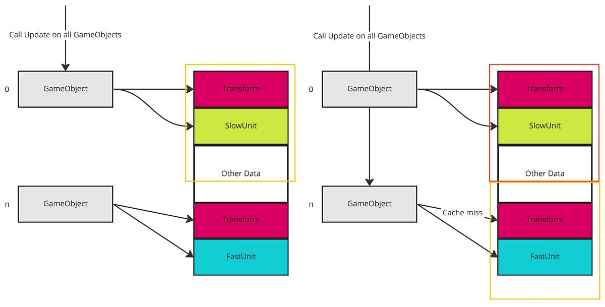

Andmetele orienteeritud disain on programmi optimeerimise lähenemisviis, mis on ajendatud CPU vahemälu tõhusast kasutamisest, mida sageli kasutatakse videomängude arendamisel. Lähenemisviisiks on keskenduda andmete paigutusele, eraldada ja sorteerida välju vastavalt sellele, millal neid vajatakse, ning mõelda andmete teisendamisele.
Paralleelne massiiv (või massiivide struktuur) on andmetele orienteeritud disaini peamine näide. See on kontrastne objektorienteeritud disainilahendustele tüüpiliste struktuuride massiiviga.
Andmetele orienteeritud disaini kui programmeerimisparadigma määratlust võib pidada vaieldavaks, kuna paljud usuvad, et seda saab kasutada kõrvuti teise paradigmaga, kuid andmete paigutuse rõhutamise tõttu ei sobi see kokku ka enamiku teiste paradigmadega.
Parem jõudlus: minimeerides andmete liikumist ja optimeerides vahemälu jaoks, võib andmetele orienteeritud disain viia kiiremate ja tõhusamate programmideni.
Lihtsustatud kood: andmetele orienteeritud disain võib muuta koodi hõlpsamini mõistetavaks ja hallatavaks, kuna see eraldab andmed toimingutest ja soodustab vastutuse selget eraldamist.
Parem paindlikkus: andmetele orienteeritud disain võib hõlbustada programmi funktsioonide lisamist või muutmist, kuna see lahutab andmed konkreetsetest toimingutest.
